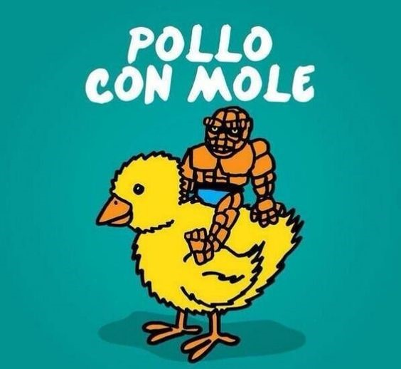
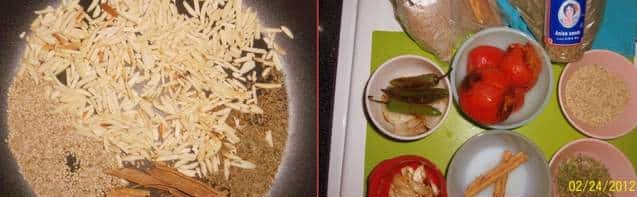
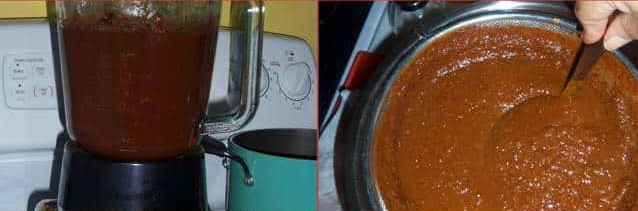
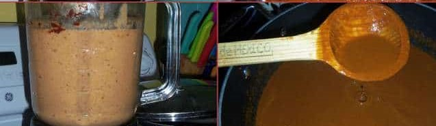
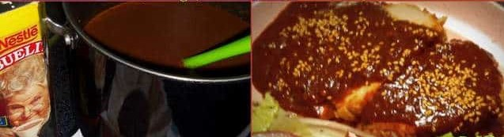
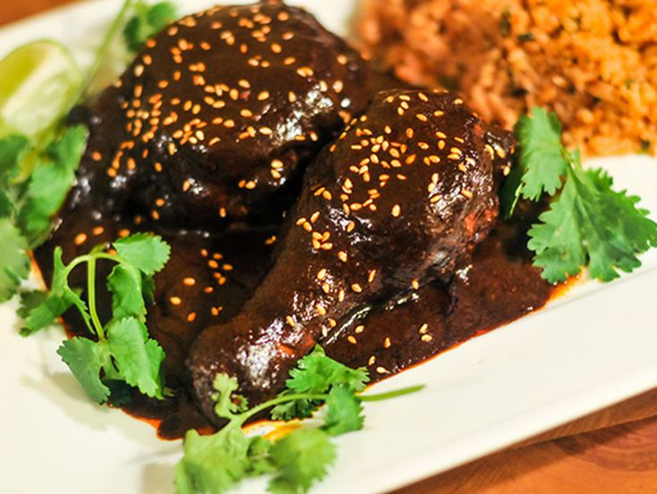

Naomi Vega
Mexico
Mexican Mole Sauce is made with layers of complex and bold flavors, simmered together over a long period of time before being blended until smooth. Learn how to make this delicious chicken mole and serve with warm rice, beans or wrapped in tortillas.
This recipe, while not 100 percent traditional, isn't exactly fast and easy either. While one may expect to spend at least a day, if not days, to make the most traditional and authentic mole, you can expect to spend approximately 2 to 3 hours to get this awesome chicken mole recipe ready and on the table for you and your family to enjoy.
For How Many People
4 PeoplePreparation Time
2 Hours - 5 MinutesCooking Time
1 Hour - 15 MinutesIngredients
Nutrition Facts
Pollo Con Mole (1 serving) contains 15g total carbs, 13g net carbs, 10g fat, 23g protein, and 230 calories.
Cooking Tip
If you want to use previously roasted chicken from the market, you can certainly do that. I would suggest adding it to the mole sauce after it has simmered for over an hour. The sauce freezes well.
Fun Fact
A famous Mexican brand "Bachoco" used a meme to promote this dish.
Cooking Tip
Depending on what kind of dried chiles you use, they will yield a different color of mole. The longer the sauce cooks down, the darker it will become. if you have the time, I would suggest cooking the sauce for an extra hour or more.
Step-By Step Recipe
1. Preheat comal (griddle) to medium heat for 5 minutes. Remove stems and seeds from the dried peppers. Transfer to comal. Toast for a few minutes, turning as needed. Do not leave them unattended or they will burn and become bitter. Transfer the peppers to a pot of simmering water Cook 15 minutes. Remove from heat.
2. Drain liquid from peppers, transfer to the blender. Add 3 cups of reserved chicken broth, 1/2 tablespoon of cumin and 2 teaspoons of salt. Blend on high until smooth. Strain the sauce through a wire mesh strainer for a smoother sauce. Set aside. Cover the raisins with enough hot water to cover, set aside.
3. In a large pan add the almonds, pepitas, sesame seeds, anise, cinnamon stick and oregano. Heat pan to medium/low heat. Toast, stirring often, do not leave unattended, or they will burn. After about 6 to 8 minutes, remove all spices and nuts from pan and transfer to coffee or spice grinder. You may have to grind in two batches. Grind into a paste, set aside.
4. Preheat broiler to high for 5 minutes. Line a baking sheet with foil paper and add tomatoes, serranos, onions and garlic. Broil for 12 minutes, turning after 6 minutes. Remove from broiler and let cool. In the blender, add the ground almonds/spice mixture, broiled tomatoes, serranos, onions, garlic, peanut butter, crackers, tostadas, cumin, drained raisins, 1/2 teaspooon pepper, 1 teaspoon salt and 2 cups of reserved chicken broth. Blend until smooth, set aside.
5. This is where your mole comes together. In a large, heavy pot, heat 4 tablespoons of olive oil to medium heat. After 3 minutes, add the chile sauce and cook for 20 minutes. Add in the other blended sauce. Stir well to combine. When it comes to a boil, taste for salt. Add the Mexican chocolate, brown sugar and remaining 3 cups of chicken broth. Add the cooked chicken pieces and continue cooking for 1 hour The sauce will darken as it cooks. Toast the remaining sesame seeds for garnishing mole. Serve with warm tortillas, rice, beans and a fresh salad.
